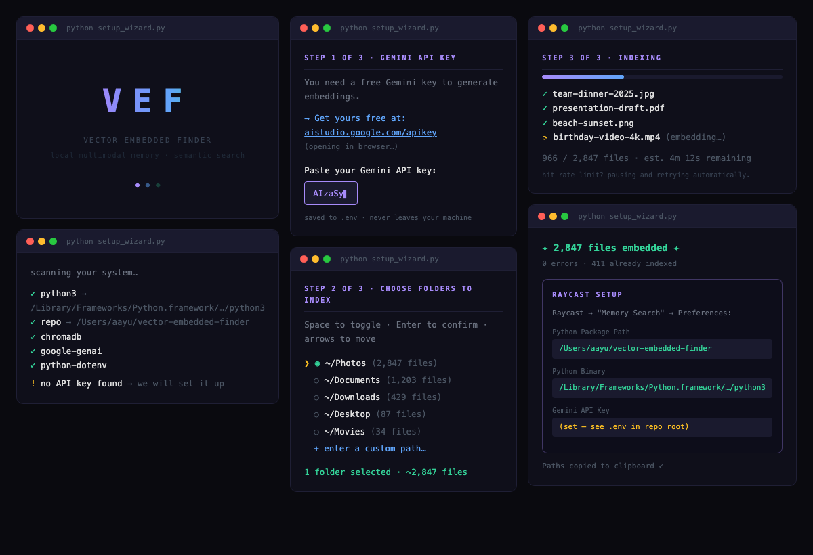

THE FRONT PAGE
EDITOR'S NOTE: As we scale to a trillion tokens daily, we find ourselves perfecting the plumbing of a house where the architects have long since stopped drawing original plans. #The commoditization of inference and the resulting friction between local architectural integrity and global scale.
As the working-age population contracts, Japan is deploying robotics not to optimize margins, but to prevent the total collapse of essential service infrastructure. This shift risks a permanent decoupling of human oversight from low-level maintenance, potentially institutionalizing a 'good enough' standard for physical labor.
Engineers have repurposed conversational models into physical dolls marketed as emotional support for aging populations—raising questions about dependency risks and the ethics of outsourcing care to synthetic agents. Early adopters report reduced loneliness, though long-term psychological effects remain unmeasured.

A new open-source tool indexes documents, code, and images into a self-hosted semantic graph, letting engineers query their own work like a private LLM—no API keys, no third-party servers, and no illusions about the maintenance burden of running it all locally.
LM Studio’s new headless CLI lets engineers run Gemma 4 offline with Claude Code’s orchestration, sidestepping API latency but trading convenience for the brute-force reality of local resource limits. The move underscores a growing schism: cloudless inference is now viable, but only for those willing to manage their own hardware chaos.
The shift toward nightly Rust for tail-call optimization highlights a persistent friction between high-level abstractions and machine-level execution. While it promises cleaner recursive logic, relying on unstable compiler features introduces a fragility that most production systems aren't yet disciplined enough to manage.
MODEL RELEASE HISTORY
No confirmed model releases were detected for this edition date.
Google’s latest model ships on mobile with claims of 'full fidelity,' but the silent tradeoff—battery life, thermal throttling, or a quietly degraded inference path—remains the real story. Engineers now face a choice: ship 'AI' as a checkbox or admit mobile LLMs are still a controlled demo.
Alibaba’s latest iteration signals the end of the scarcity era, shifting the technical debt from model capacity to the sheer logistics of managing high-velocity, low-margin output. The risk lies in a feedback loop of synthetic mediocrity if the discipline of data curation fails to keep pace with this unprecedented volume.